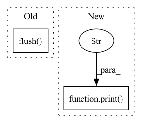

Pattern ID :24829
Before Change
z_mm.flush()
pos_mm.flush()
y_mm.flush()
dy_mm.flush()
q_mm.flush()
pq_mm.flush()
dp_mm.flush()
After Change
def process(self):
print("Arguments")
print(f" max_gradient: {self.max_gradient} eV/A" )
print(f" subsample_molecules: {self.subsample_molecules}\n")
print("Gathering statistics...")
num_all_confs = 0In pattern: SUPERPATTERN
Frequency: 4
Non-data size: 2
Instances Fragment ID: 76680050
Project Name: torchmd/torchmd-net
Commit Name: d23e6500f2cef1fa56d6c99ce5fdb983f1379bca
Time: 2022-10-28
Author: peastman@stanford.edu
File Name: torchmdnet/datasets/ace.py
M Class Name: Ace
N Class Name: Ace
M Method Name: process(1)
N Method Name: process(1)
M Parent Class: Dataset
N Parent Class: Dataset
M File Name: torchmdnet/datasets/ace.py
N File Name: torchmdnet/datasets/ace.py
M Start Line: 188
M End Line: 202
N Start Line: 221
N End Line: 289
Before Change
train_log[(3*epoch)+2] = line
print(line, file=output)
print("\n", file=output)
output.flush()
if early_stopping.early_stop:
print("*** Early stopping ***")
break
After Change
if normal_prior_over_r:
print("// Gaussian prior over theta with mean=0 and std={}".format(theta_prior), file=sys.stderr)
else:
print("// Uniform prior over theta" , file=sys.stderr)
if t_inf=="unimodal" and r_inf=="unimodal":
inf_dim = z_dim + 3 // 1 additional dim for rotation and 2 for translation Fragment ID: 76680048
Project Name: smlc-nysbc/target-vae
Commit Name: 3ca9ef4e11fdd982ae05f11d98fcbf4ac6def1e7
Time: 2022-11-11
Author: alireza.nasiry@gmail.com
File Name: train_mnist.py
M Class Name: AnonimousClass
N Class Name: AnonimousClass
M Method Name: main(0)
N Method Name: main(0)
M Parent Class:
N Parent Class:
M File Name: train_mnist.py
N File Name: train_mnist.py
M Start Line: 404
M End Line: 692
N Start Line: 472
N End Line: 693
Before Change
train_log[(3*epoch)+2] = line
print(line, file=output)
print("\n", file=output)
output.flush()
if early_stopping.early_stop:
print("*** Early stopping ***")
break
After Change
print(line, file=output)
print("\n", file=output)
print(line, file=log_file)
print("\n" , file=log_file)
if early_stopping.early_stop:
print("*** Early stopping ***")
break Fragment ID: 76680049
Project Name: smlc-nysbc/target-vae
Commit Name: 293dd86fa319159b69cfd478120340daa759625e
Time: 2022-11-11
Author: alireza.nasiry@gmail.com
File Name: train_galaxy.py
M Class Name: AnonimousClass
N Class Name: AnonimousClass
M Method Name: main(0)
N Method Name: main(0)
M Parent Class:
N Parent Class:
M File Name: train_galaxy.py
N File Name: train_galaxy.py
M Start Line: 401
M End Line: 648
N Start Line: 444
N End Line: 648
Before Change
z_mm.flush()
pos_mm.flush()
y_mm.flush()
dy_mm.flush()
os.rename(idx_mm.filename, idx_name)
os.rename(z_mm.filename, z_name)
os.rename(pos_mm.filename, pos_name)After Change
print(f" version: {self.version}")
print(f" subsets: {self.subsets}")
print(f" max_gradient: {self.max_gradient} eV/A")
print(f" subsample_molecules: {self.subsample_molecules}\n" )
print("Gathering statistics...")
num_all_confs = 0
num_all_atoms = 0 Fragment ID: 76680042
Project Name: torchmd/torchmd-net
Commit Name: d23e6500f2cef1fa56d6c99ce5fdb983f1379bca
Time: 2022-10-28
Author: peastman@stanford.edu
File Name: torchmdnet/datasets/spice.py
M Class Name: SPICE
N Class Name: SPICE
M Method Name: process(1)
N Method Name: process(1)
M Parent Class: Dataset
N Parent Class: Dataset
M File Name: torchmdnet/datasets/spice.py
N File Name: torchmdnet/datasets/spice.py
M Start Line: 187
M End Line: 198
N Start Line: 167
N End Line: 216